Civil Engineering & Surveying · Carlisle
Measured on site. Built with confidence.
Surveys, setting out and site engineering across Cumbria, Northumberland and south-west Scotland. You deal directly with Ryan Johnston, the engineer on site.
5.0 from 4 Google reviews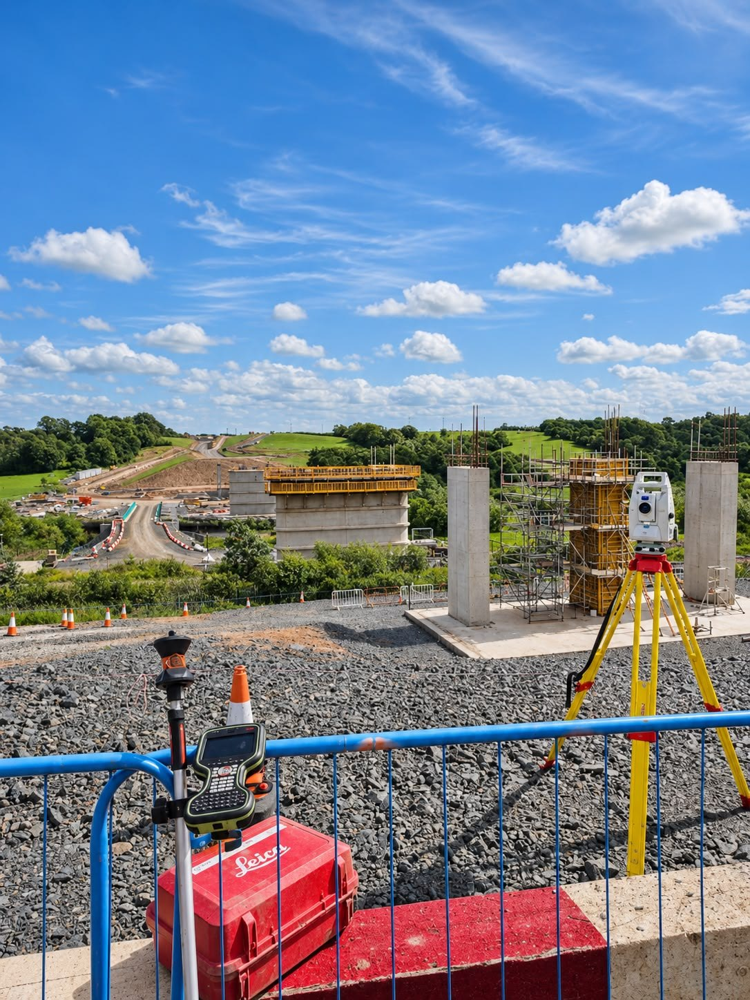
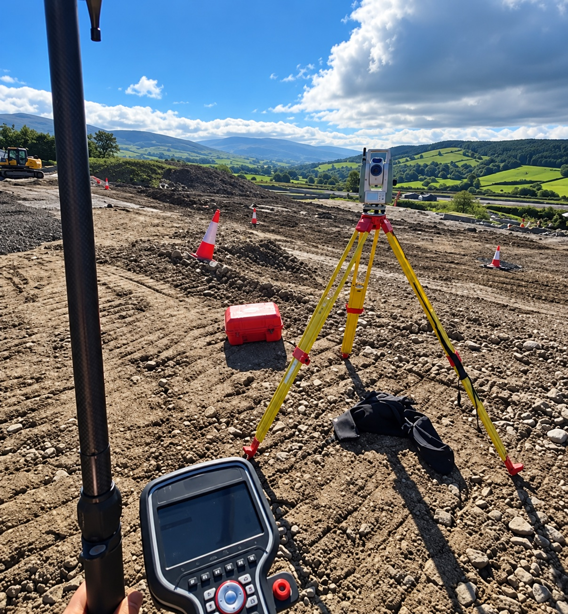


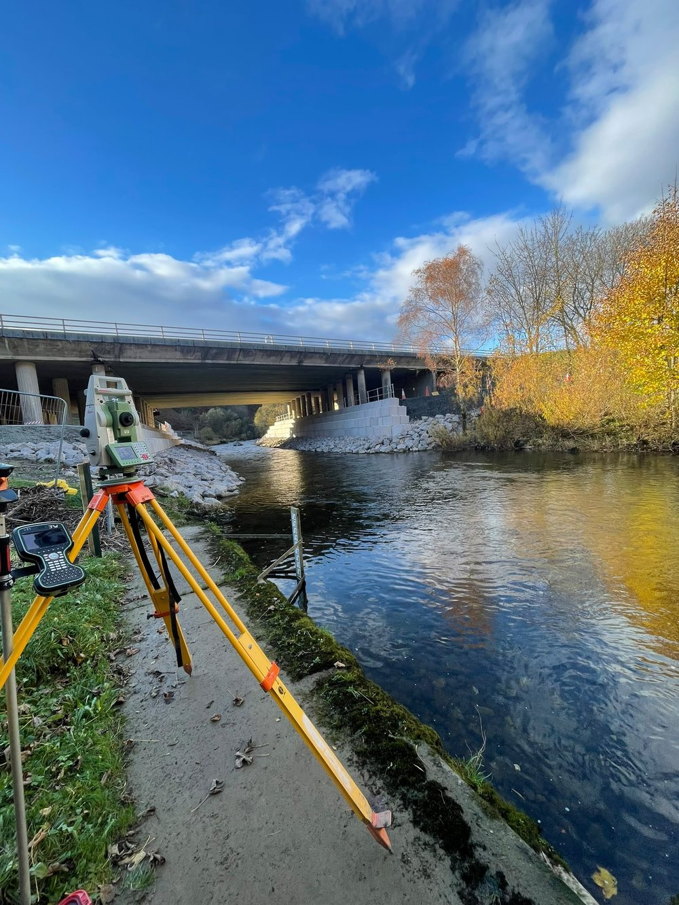

Services
Land & Utility Surveying
- Topographical & Land Surveying
- Overhead Cable Height Surveys
- Drainage, Utility Tracing & GPR Surveys
Levels, boundaries and buried services, measured before you design or dig.
View full scopeView service 02Site Engineering & Earthworks
- Site Engineering & Setting Out
- Earthworks & Machine Control
- Quality Assurance & Monitoring
Your build set out to the drawings, with earthworks measured to match.
View full scopeView service 03Highways & Infrastructure
- Road Alignments & Carriageway Levels
- Junctions, Roundabouts & Access Roads
- Highway Drainage & Embankments
Setting out and checks for roads, from earthworks to the finished surface.
View full scopeView service 04Bridges & Structural Engineering
- Bridge Foundations, Abutments & Piers
- Bearings, Decks & Parapets
- Dimensional Verification & RC Checks
Bridges and structures set out and checked as they go up.
View full scopeView service 05Survey Control & Construction Verification
- Survey Control & Precision Monitoring
- Construction QA & As-Built Surveys
- Structural, Settlement & Rail Monitoring
Fixed control for the whole site, and checks that the work matches the design.
View full scopeView service 06CAD & Digital Survey Services
- 2D / 3D AutoCAD, LandXML & DXF
- Machine Control Design Models & DTMs
- As-Builts, Volumes & Survey Reports
Survey data turned into drawings, models and machine files.
View full scopeView serviceBrief the job. Build with certainty.
Share your drawings, site location and scope — Ryan agrees clear deliverables up front and carries out the survey or setting out to suit your programme.
-
Send the brief or drawings
Email drawings (DWG, DXF, LandXML or PDF) or simply start with a site postcode and short description of what is happening on site.
-
Agree scope & deliverables
Setting-out pins, CAD drawings, machine models or QA checks — exact outputs, programme dates and fees are agreed before mobilisation.
-
Surveyed, set out & issued
Fieldwork is measured cleanly on site using total station and GNSS, verified against your design and handed over in the formats your team uses.
Practical in the field.
Precise where it counts.
RG is run by Ryan Johnston, Engineer and Director. When you call, email or send drawings, you deal with Ryan directly, from the first conversation to the final checks.
Ryan sets out roads, drainage, foundations, structures and temporary works, and carries out topographical, boundary, volumetric, GPR, overhead cable height and monitoring surveys across Cumbria, Northumberland, south-west Scotland and beyond.
“He treats every detail as a priority and the measurements are bang on.”
Photo of Ryan, a short background (years on site, types of work) and any qualifications or cards he holds. Ryan to supply.
Recent work
A few jobs RG has worked on.
-
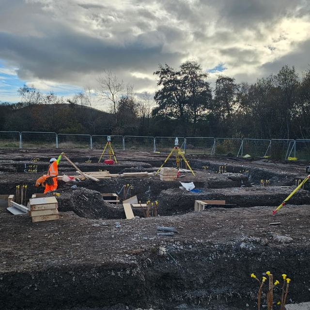
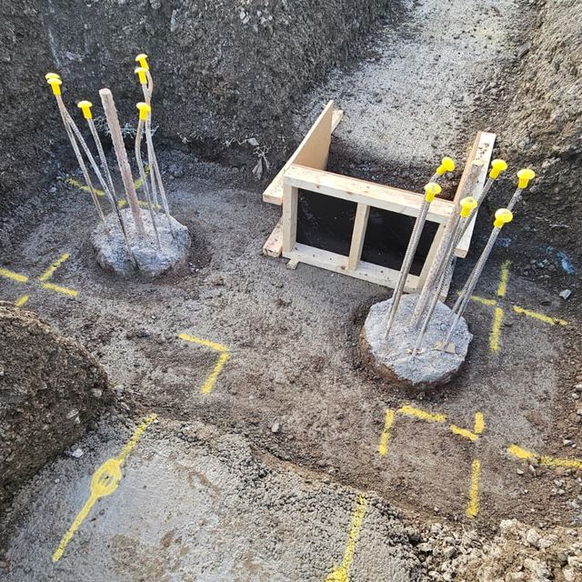
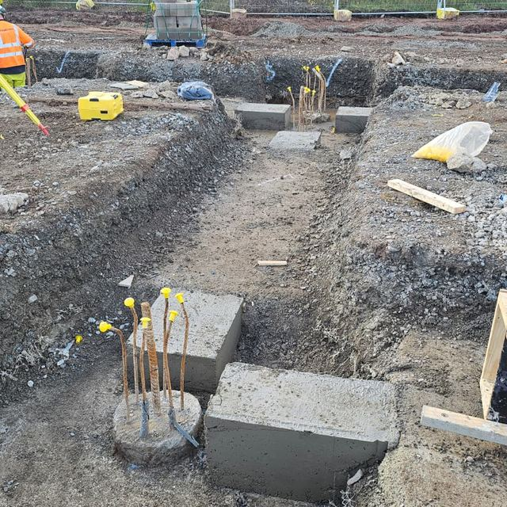
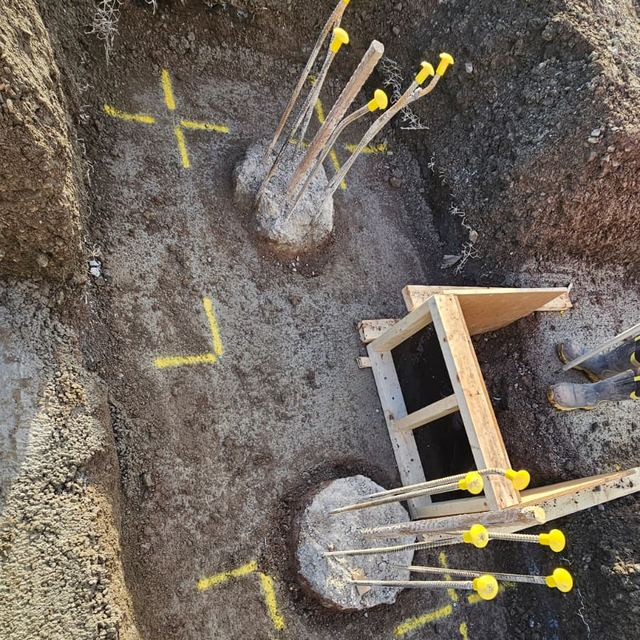
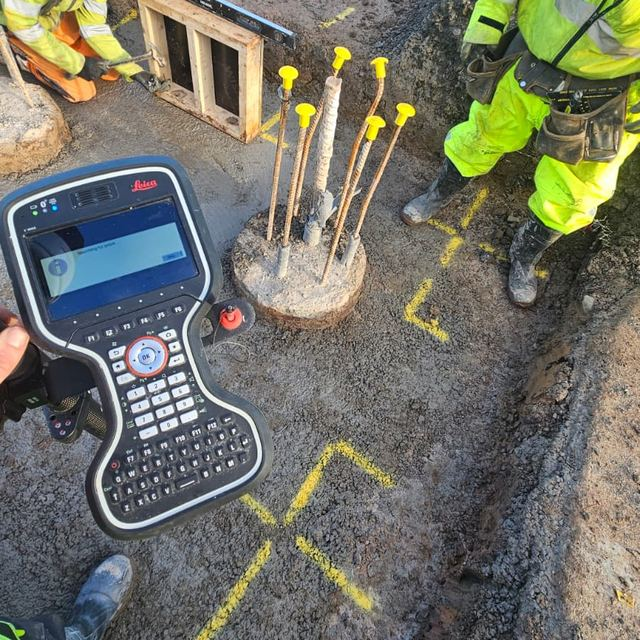
Cleator Moor, Cumbria
Steel frame building
Foundation setting out for a new steel frame building, with pad positions, starter bars and formwork marked out and checked on site.
-
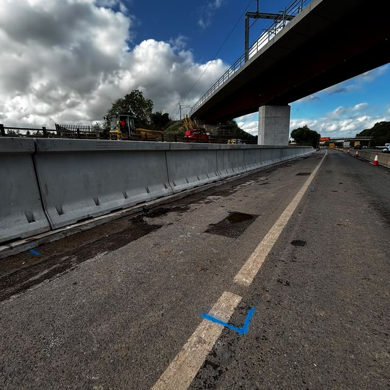
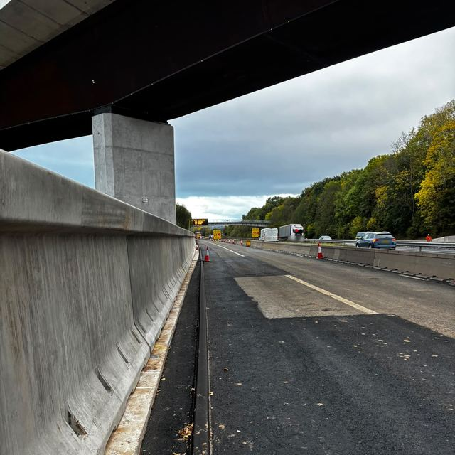
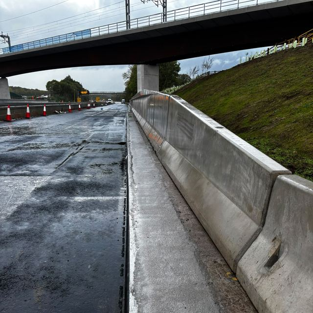
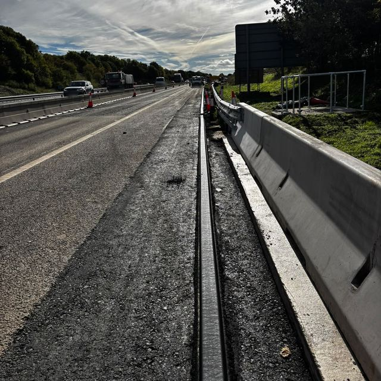
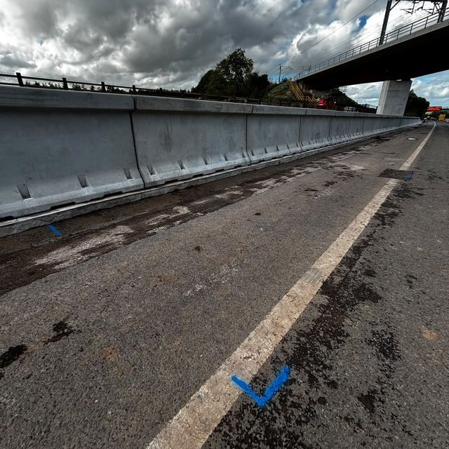
Highways · Works complete
Clifton Bridge VRS
A new concrete vehicle restraint system (safety barrier) and slot drain beneath the bridge, shown with the works complete.
-
Workington, Cumbria
Cumberland Sports Village
Enabling works and ground investigation surveys ahead of the main build of the £16m sports village, working alongside consultant Curtins.
Ryan to confirm
What clients say
-
★★★★★
“Twice now for us Ryan has delivered exceptional professionalism and top-tier precision. He treats every detail as a priority and the measurements are bang on. We'll use him again on our next project guaranteed.”
Google review
-
★★★★★
“Used Ryan and Mateusz on a recent 100x40 steel frame building. Millimeter perfection on the bolt boxes. And steel bolted up perfect. I've a few more jobs lined up for them to tackle.”
Google review
-
★★★★★
“Ryan has completed several topo and site surveys for me. I have found him to be professional and keen to help however he can.”
Lofthouse Architectural
Have a site
to get right?
Answer a few short questions and your email to Ryan Johnston is written for you. Or call him directly.
Question 1 of 6
Preview: this form stores nothing on a server. Your answers stay on this device until you send the email.